27 April 2012
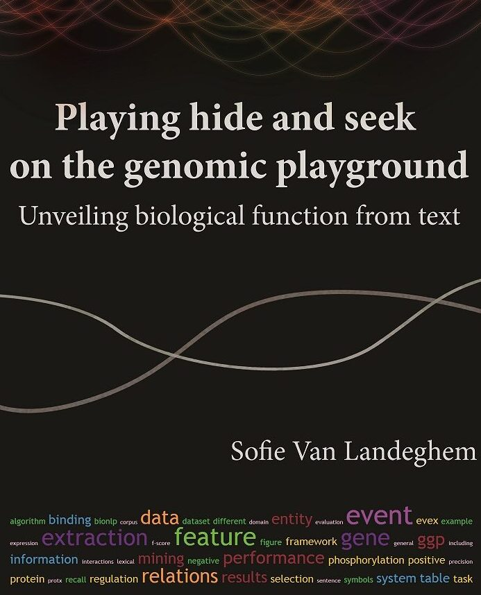
My PhD thesis focuses on the field of natural language processing for biomolecular texts, or "BioNLP". It discuss novel approaches to event extraction and the construction of a large-scale text mining resource called "EVEX".
Read more →
2 November 2023
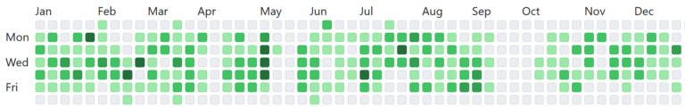
As I'm celebrating 10 years of contributing open-source code on Github, I share some tips & tricks on how to collaborate efficiently on a code base.
Read more →
19 June 2023
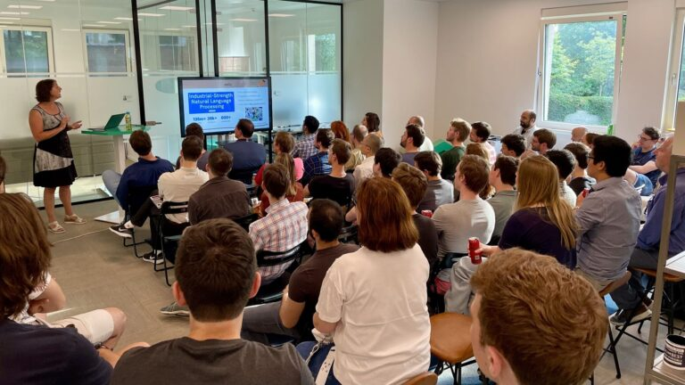
In this talk presented at the Belgian NLP meetup, I showcase how to build such a structured pipeline with the open-source NLP toolbox spaCy, and its recent extension 'spacy-llm'.
Read more →
15 June 2023
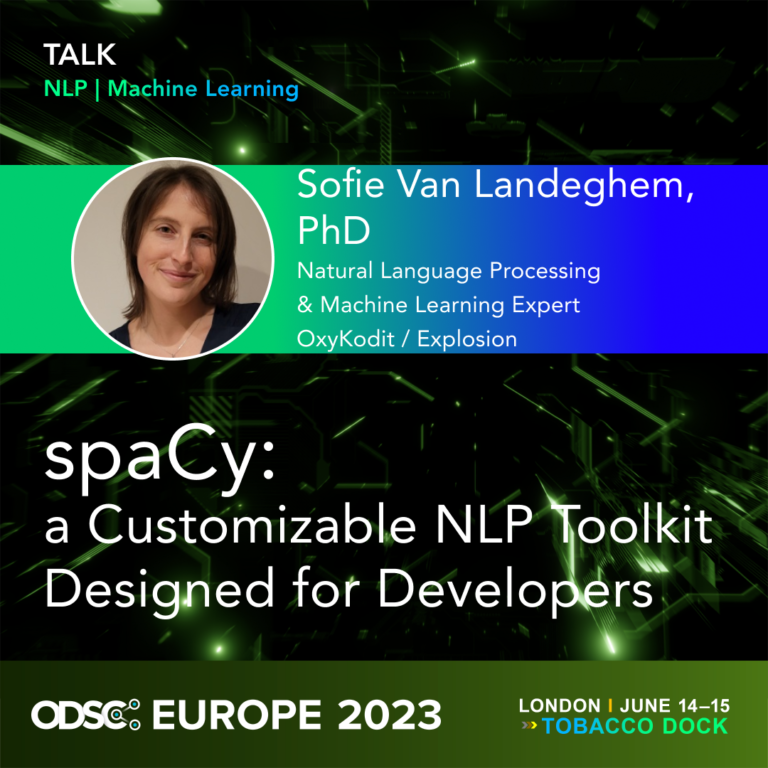
At ODSC Europe 2023, I presented the open-source NLP toolbox spaCy, and demonstrated how Large Language Models (LLMs) can be integrated into your NLP pipelines.
Read more →
20 December 2022
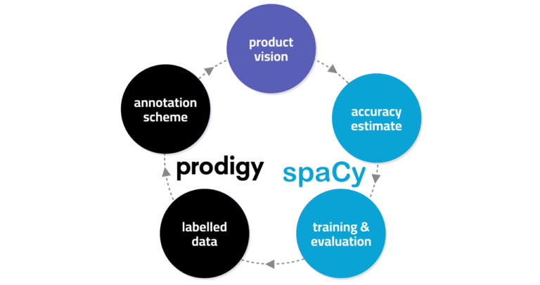
This LinkedIn post offers some tips and tricks from personal experience, helping you get the most out of your ML/NLP projects. It's all about data and iteration!
Read more →
19 December 2022
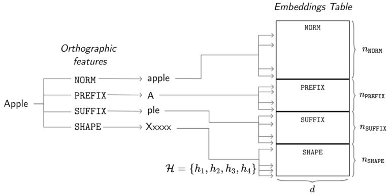
In this technical report we lay out a bit of history and introduce the embedding methods in spaCy in detail. Further, we critically evaluate the hash embedding architecture with multi-embeddings on Named Entity Recognition datasets.
Read more →
6 October 2022
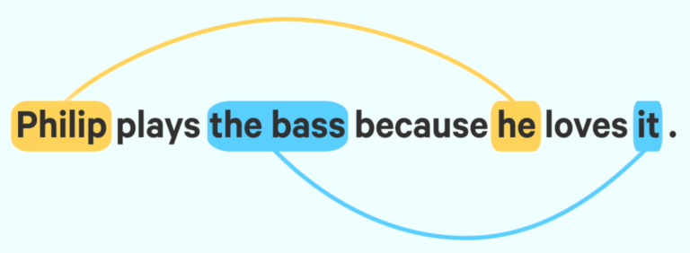
This blog post introduces a novel coreference implementation for spaCy. We've based our implementation on a recent incarnation of the neural paradigm published in the paper "Word-Level Coreference Resolution" by Vladimir Dobrovolskii.
Read more →
14 June 2022
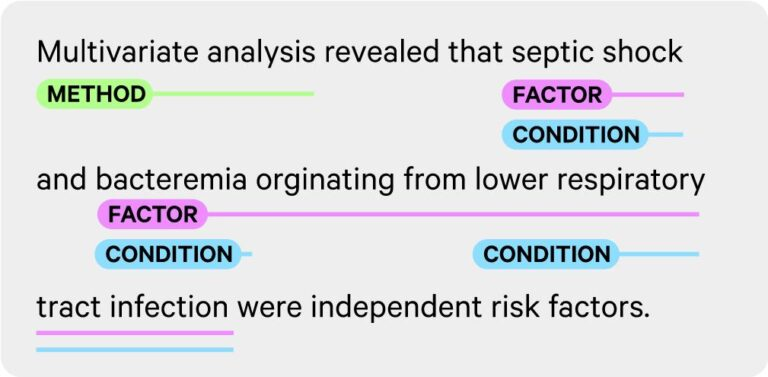
The SpanCategorizer is a new spaCy component that answers the NLP community's need to have structured annotation for a wide variety of labeled spans, including long phrases, non-named entities, or overlapping annotations.
Read more →
31 May 2025
This talk identifies common pitfalls and illustrate them with real-world examples from nearly two decades of experience in the data science field. We explore the hidden story behind the performance metrics.
Read more →
1 February 2021
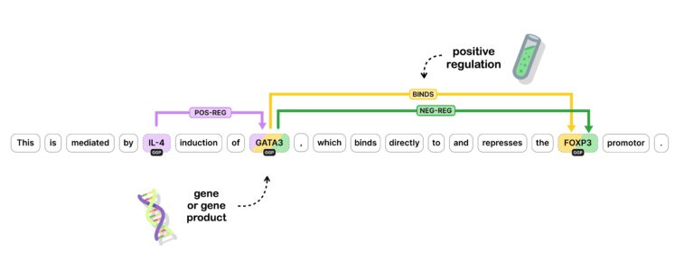
This video shows how to apply the new spaCy v3 features as we work our way through implementing a new custom component from scratch. The specific challenge we are setting ourselves here is implementing a custom component to predict relationships between named entities.
Read more →
1 February 2021
spaCy v3.0 is a huge release! It features new transformer-based pipelines that get spaCy's accuracy right up to the current state-of-the-art, and a new workflow system to help you take projects from prototype to production.
Read more →
7 May 2020
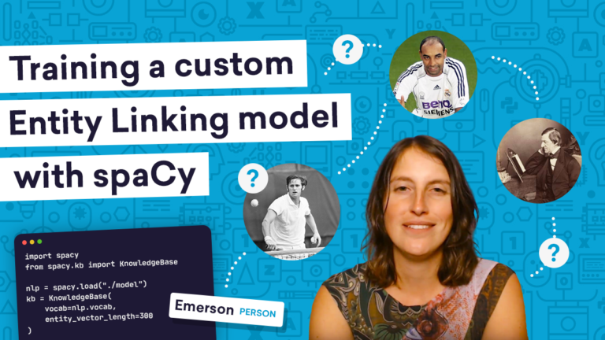
This video tutorial shows how to use spaCy to implement and train a custom Entity Linking model that disambiguates textual mentions to unique identifiers.
Read more →
19 February 2020
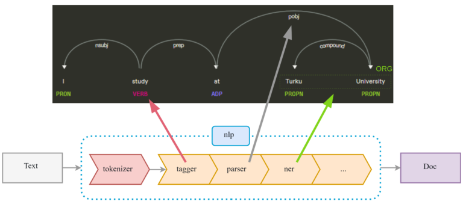
At a Turku.AI meetup, I gave a talk explaining spaCy's typical usage as well as upcoming features for the v.3 release.
Read more →
1 October 2019
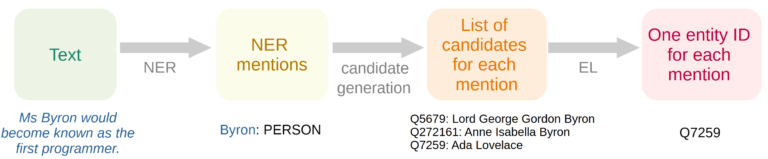
Entity linking for spaCy: Grounding textual mentions
In this talk, I present my recent work on adding Entity Linking functionality to spaCy, which allows grounding information from text into "real world" unique identifiers defined by a knowledge base (KB).
Read more →
12 July 2019
At spaCy IRL 2019, I presented our ongoing work on the Entity Linking functionality in spaCy, including our efforts to work with a fast and efficient in memory KB, a neural network architecture that encodes both the entity information as well as the sentence context.
Read more →
27 February 2019
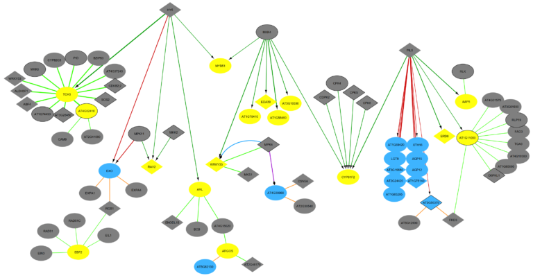
At this Women in Tech event in Antwerp, I've given an talk showing how methods from Natural Language Processing, Data Integration and Graph Analysis all contribute to studying the dynamic rewiring of molecular networks.
Read more →
1 February 2019
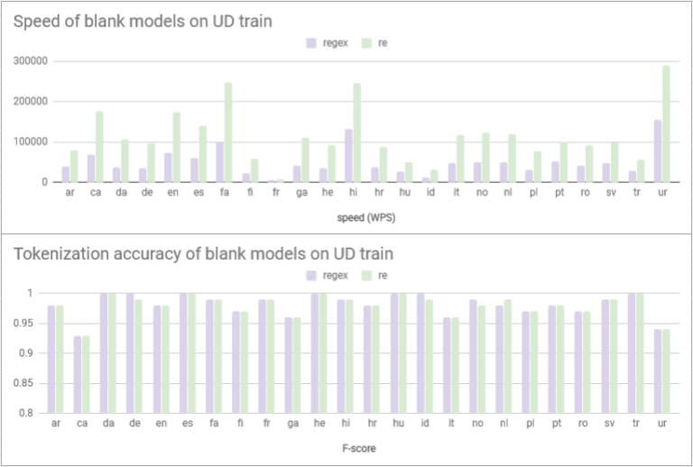
Increasing tokenization speed across spaCy's core languages
As one of my first core contributions to the spaCy open-source NLP library – this PR increases tokenization speed with a factor of 2-3 across all languages.
Read more →
27 June 2018
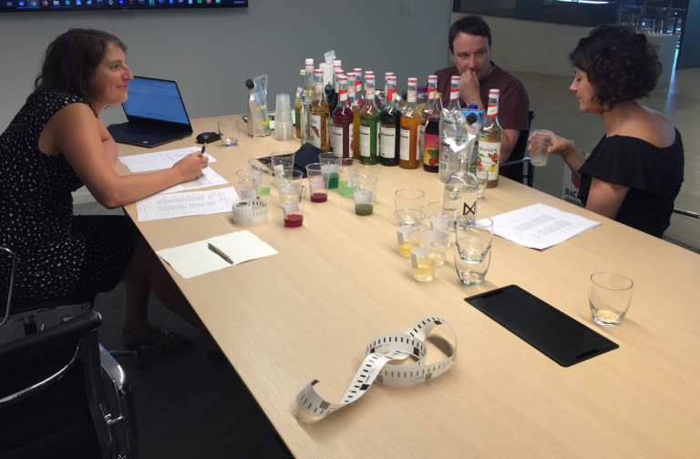
Developing a cocktail generator that optimizes your drink to your taste
In the past few months working at Foodpairing in Gent, I've been working on a revamped version of our cocktail generator. Testing the algorithms means tasting the cocktails it produces – resulting in a delicious afternoon at work!
Read more →
1 October 2016
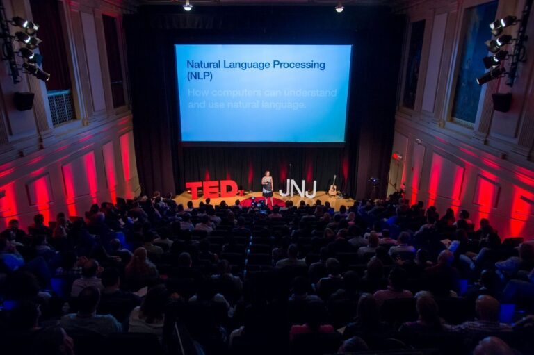
TEDxBigData: Machine Learning & Natural Language Processing
I had the opportunity to present at a TEDxBigData event organized by J&J. In this talk, I shared my enthousiasm and love for Natural Language Processing by giving some examples of ambiguities in natural language.
Read more →
15 January 2016
Cell line name recognition in support of the identification of synthetic lethality in cancer from text
In this study, we revisit the cell line name recognition task, evaluating both available systems and newly introduced methods on various resources.
Read more →
5 January 2016
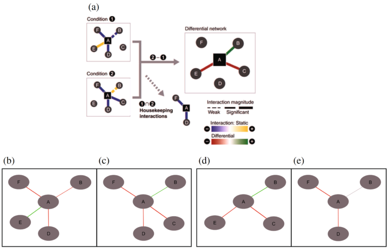
Diffany: an ontology-driven framework to infer, visualise and analyse differential molecular networks
In this work, we present a generic, ontology-driven framework to infer, visualise and analyse an arbitrary set of condition-specific responses against one reference network.
Read more →
5 May 2015
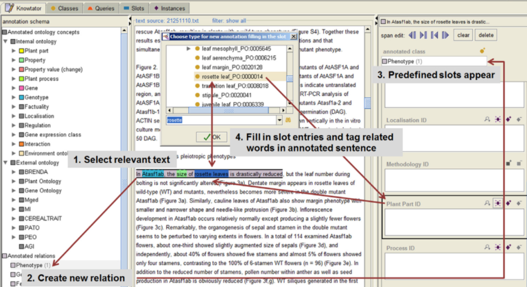
The KnownLeaf literature curation system
We constructed an annotation framework for the curation of the scientific literature studying the molecular mechanisms that control leaf growth and development in Arabidopsis thaliana.
Read more →
9 August 2013
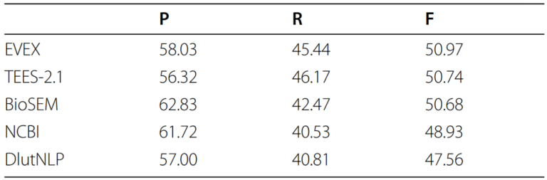
EVEX in ST'13: Application of a large-scale text mining resource to event extraction and network construction
In this paper, we describe our participation in the latest BioNLP Shared Task using the large-scale text mining resource EVEX.
Read more →
17 April 2013
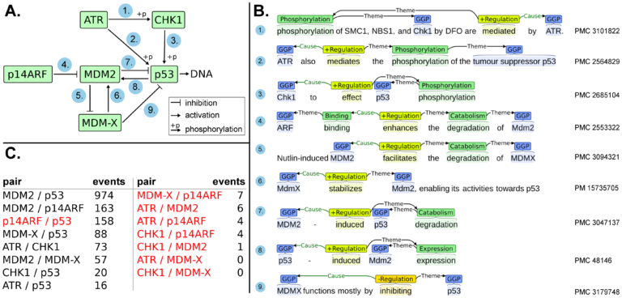
Large-scale event extraction from literature with multi-level gene normalization
We have combined two state-of-the-art text mining components to perform normalization and event extraction on all 1.9 million PubMed abstracts and 460 thousand PubMed Central open access full-text articles.
Read more →
25 March 2013
The Potential of Text Mining in Data Integration and Network Biology for Plant Research: A Case Study on Arabidopsis
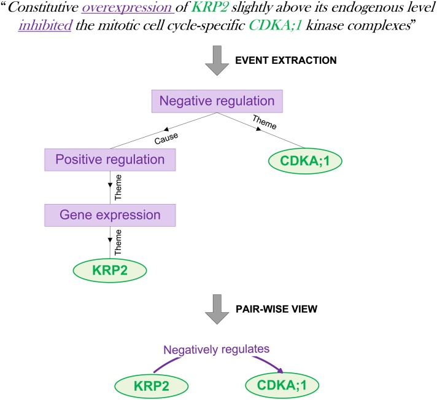
In this study published in Plant Cell, we assess the potential of large-scale text mining for plant biology research in general and for network biology in particular.
Read more →
11 June 2011
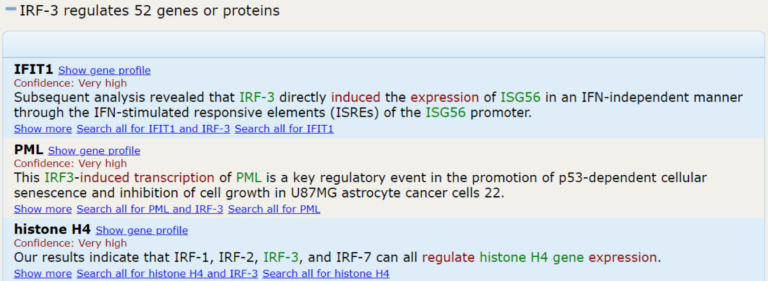
EVEX: a PubMed-scale resource for homology-based generalization of text mining predictions
Accounting for lexical variation of gene symbols, we have implemented a disambiguation algorithm that uniquely links the arguments of 11.2 million biomolecular events to well-defined gene families.
Read more →
4 September 2010
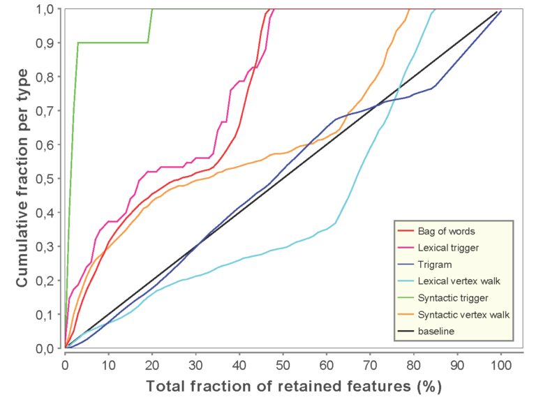
Discriminative and informative features for biomolecular text mining with ensemble feature selection
In this study published in Bioinformatics, we show how feature selection can be used to improve state-of-the-art text mining algorithms.
Read more →
5 June 2009
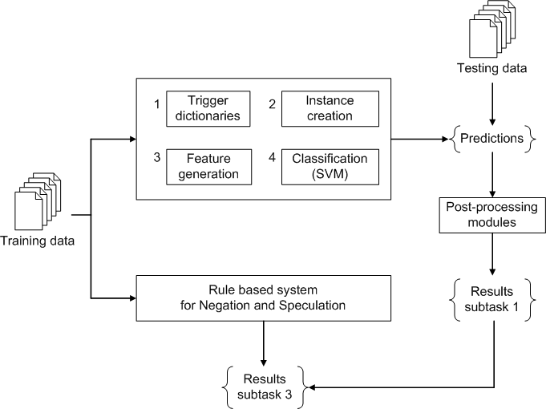
Analyzing text in search of bio-molecular events
We participated in the BioNLP Shared Task on Event Extraction with an SVM-based implementation to extract biomolecular events from text. Out of 24 participating NLP teams world-wide, we ranked 5th.
Read more →
23 June 2007
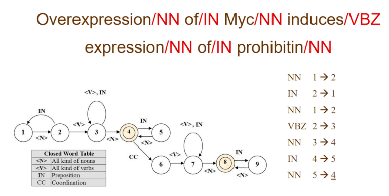
Master thesis: Automated information retrieval and data mining for bio-informatics
For my Master Thesis, I have developed GeneFetch, a system that enables biologists to easily find and browse vital information on any gene or group of genes.
Read more →